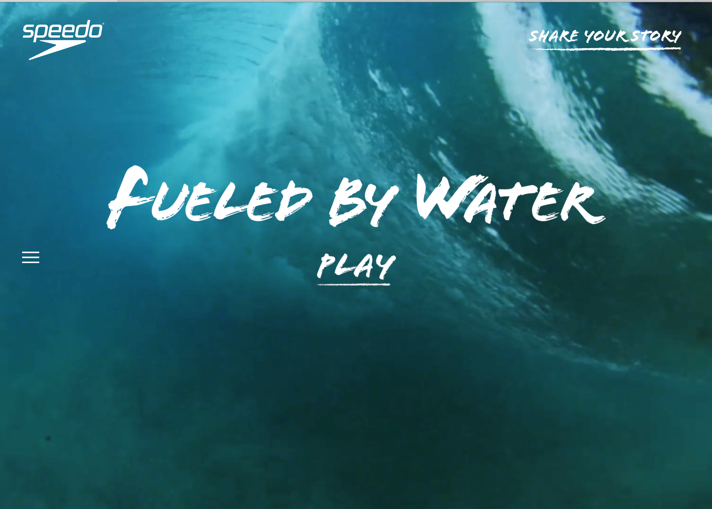

The fullscreen images that you first see are very visually pleasing, and I like how they are moving images. The main thing that Speedo wants you to view is video, which you can easily play without leaving the homepage. There are more videos located under a small simple tab bar that then project the chosen video onto the main screen, shifting the focus. It's simple yet very appealing.
 back to homepage